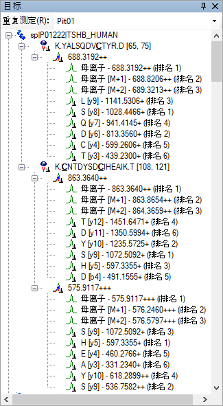
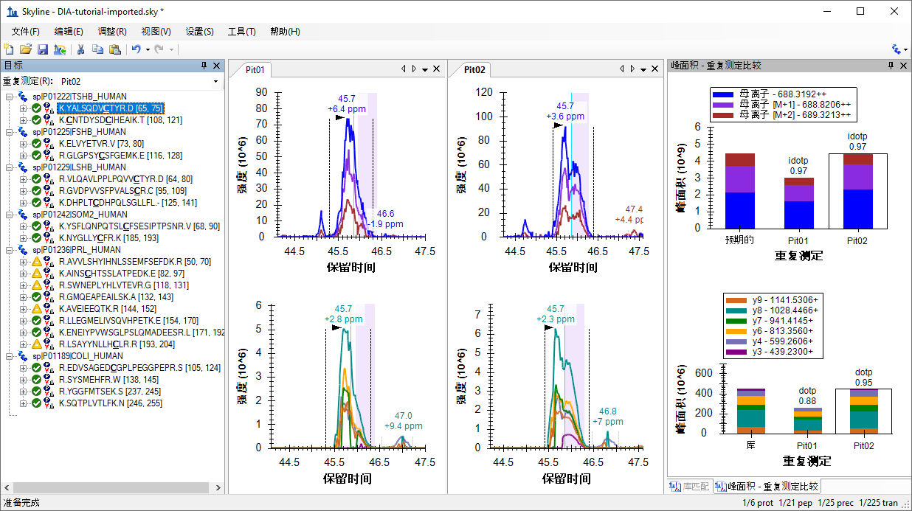
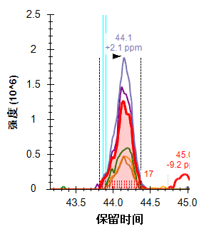
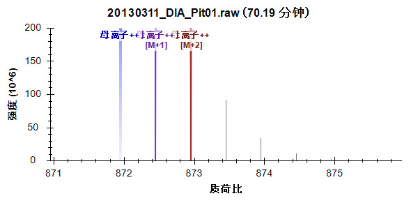

Data-independent acquisition (DIA)1,2 is an advanced technique for performing large scale targeted proteomics experiments. Targeted acquisition approaches such as selected reaction monitoring (SRM) and parallel reaction monitoring (PRM) are limited to only a handful of peptides without acquisition scheduling or tens to hundreds of peptides per mass spec run with scheduling. DIA allows the measurement of much larger numbers of peptides (thousands or even whole proteomes) with only modest sacrifices in sensitivity, selectivity and reproducibility relative to SRM. DIA also has the advantage that the peptides to be measured do not need to be specified in advance or scheduled, but rather, product ion chromatograms for any desired peptide within a broad range of precursor m/z can be extracted after acquisition from a DIA run.
Since support for chromatogram extraction from DIA data was first implemented in Skyline, in October 2010, this support has been improved regularly, so that as of version 21.1, Skyline supports several popular strategies and workflows for analyzing DIA data. Skyline also supports all DIA-capable instruments including Q-TOF instruments from SCIEX, Agilent, Bruker and Waters and Q-Orbitrap instruments from Thermo.
One effective DIA workflow starts with any number of initial data-dependent acquisition (DDA) runs on a certain instrument type and chromatography set-up. It is beneficial to carry out these initial shotgun measurements on the same instrument where DIA will be run. However, it is also possible to transfer targeted assays between instrument platforms if similar fragmentation techniques and chromatography are used. For these initial DDA measurements, samples may be fractionated or otherwise simplified to reach higher proteome coverage. The DDA runs are processed with a peptide spectrum matching pipeline, and the resulting peptide ID’s spectra and retention times are then used to create either a spectral library and retention time (iRT) library (in Skyline) or an extended transition list (with similar information for a subset of fragment ions) called an “assay library” (in other tools). These libraries of fragment ion relative abundance and normalized retention time (iRT) can be used in any number of subsequent DIA runs employing the same instrumentation and standard peptides for retention time alignment.
Although many methods exist for converting DDA search results to a library suitable for this library DIA analysis approach (described as the “Prior Knowledge Workflow” in Skyline Tutorial Webinar #2 and has since been documented more thoroughly in webinars #14, #15, and #18 as well as the tutorial Analysis of DIA/SWATH Data), a straightforward and accessible way to start DIA analysis is simply to intersperse DDA runs with DIA runs on the same instrument and use the spectra and retention times of the DDA results as predictions for the DIA runs.
In this tutorial, you will learn how to set up, import, and process DIA runs in Skyline using the simple interspersed DDA/DIA approach. If you are going to use DIA in your research, it is highly recommended that you continue to the more powerful, more complex methods described in the webinars and tutorial listed above.
To start this tutorial, download the following ZIP file:
https://skyline.ms/DIA-20_2.zip
Note that the file is very large (4.5 GB download, and 6.0 GB uncompressed), because it includes DIA runs which are generally very large files, often in the order of 100 to 200 times larger than files for SRM runs. If this download takes you too long or you do not have the available disk space, you can alternatively download a smaller (660 MB download, and 918 MB uncompressed) version of the tutorial here:
https://skyline.ms/DIALibrary-20_2.zip
If you choose the small version, lacking the mass spec raw data files, you will need to skip some steps in the tutorial, which will be noted in the text below. Regardless of which ZIP file you choose, the next step is to extract the files in it to a folder on your computer, like:
C:\Users\damodei\Documents
This will create a new folder:
C:\Users\damodei\Documents\DIA-20_2
If you have been using Skyline prior to starting this tutorial, it is a good idea to revert Skyline to its default settings. To do so:

The document settings in this instance of Skyline have now been reset to the default.
Since this tutorial covers a proteomics topic, you can choose the proteomics interface by doing the following:

Skyline is operating in proteomics mode which is displayed by the protein icon  in the upper
right-hand corner of the Skyline window.
in the upper
right-hand corner of the Skyline window.
For DIA analysis, you will want to force Skyline to integrate peak areas for all extracted quantitative transitions. To do that:
You should be looking at Skyline with a new empty document with only the default settings. To illustrate the entire process for analyzing DIA data in Skyline, you will build up a Skyline document appropriate for DIA analysis from scratch, filling in the necessary settings, transitions, spectral libraries, and retention time information.
If you were performing an experiment using the DIA with interspersed DDA workflow, you would first configure your instrument for both the DIA and DDA runs, with only very general consideration of any peptide targets you might be interested in, like making sure the precursor m/z range covered contains the targets. The DDA method is left to you, but Skyline can help you set up the DIA method by allowing you to define your “isolation scheme” (a pattern of precursor isolation windows to fragment for MS/MS). Even if you have already collected DIA data, you will want to define the isolation scheme you used to help Skyline to process your DIA runs. To define an isolation scheme for this tutorial experiment, take the following steps:
For most tryptic peptides, the first 3 isotope peaks are the most intense. You can also use an intensity threshold based on percentage of the base (most intense) isotope peak, but these settings are a reasonable default for tryptic peptides.
| Note: These data were collected on a Q-Exactive, in which both MS1 and MS2 scans were performed using the Orbitrap. However, we have found that extracting chromatograms from centroided spectra yields better results than using the native profile spectra when the mass analyzer is specified as “Orbitrap”. |
The Transition Settings form should look something like this:

| Note: You are leaving the Retention time filtering option as Use only scans within [5] minutes of MS/MS IDs. This tells Skyline it should only extract intensities from DIA spectra acquired within 5 minutes of a peptide spectrum matching found in your library. For a single peptide spectrum match, the total extraction window will be 10 minutes. If there is more than one ID for a given peptide, Skyline will extract from spectra acquired within the range between the minimum ID time minus 5 minutes and the maximum ID time plus 5 minutes. (All ID retention times are stored even in the non-redundant library you have built, as you will see later.) The second option, Use only scans within [5] minutes of predicted RT, uses an RT predictor (for example SSRCalc or, more commonly, an iRT library) to determine the extraction time range. You will not use an RT predictor in this tutorial, but they are discussed in other tutorials and webinars previously mentioned and the Importing Assay Libraries tip (on the Skyline web page under Tips > Working with Other Quantitative Tools). |
You have set the basic full-scan instrument parameters. Next, you will specify the DIA isolation scheme, or the pattern of precursor m/z ranges that the instrument cycles through when performing DIA. For example, in the data set for this tutorial, the Q Exactive instrument used a cycle of precursor m/z ranges starting with 500 to 520 m/z, then 520 to 540 m/z, all the way up to 880 to 900 m/z (or 20 consecutive 20 m/z windows from 500 to 900 m/z), and then repeated the cycle. To specify this isolation scheme in Skyline, follow these steps:
The Edit Isolation Scheme form should appear as follows:

This will enable a grid allowing you to specify the isolation windows. You can enter window boundaries manually in the grid, but since the cycle of window boundaries is highly regular in this case (from 500 to 900 m/z in increments of 20 m/z), there is a faster way to specify the boundaries:
This will place window boundaries optimized to be roughly 0.25 m/z from where charge 1 and 2 peptide precursors can occur. Some charge 3 and 4 precursors may be closer to these boundaries, but with 20 m/z windows, these should still occur infrequently, alleviating the need for the windows overlapping margins (0.5 m/z on either side) proposed in the original paper on SWATH2 if the Q1 isolation is reasonably efficient at the borders3.
Figure: Histograms calculated from peptide precursors with charges 1-4 found in common libraries of observed peptides. The tallest peaks represent charge 1-4 precursors, the second tallest peaks represent charge 2 and 4 precursors, and the smaller peaks represent charge 3 only precursors, with charge 4 only precursors visible only as small shoulders on the charge 3 only peaks. Vertical lines marked “Optimal” Boundary indicate the optimize window placement boundaries in this range. (Courtesy of Brian Searle)

Supplemental Figure S1 from Gillet, et al. MCP 2012: c) shows perfect rectangular isolation of the defined range, d) shows less ideal signal drop-off over 0.5 m/z at the edge of a defined quadrupole isolation range, e & f) show how a full isotope distribution gets split between windows without and with overlapping margins. It is important to remember that entire isotope distributions are being isolated though only the monoisotopic m/z is targeted, making it possible to get strong fragment ion signal even when a monoisotopic precursor m/z seems very close to the edge of an isolation window.
If the DIA data you are working with has already been acquired, it is important that the isolation scheme defined at this point reflects the instrument settings that have been used for acquisition. In this case, you are generally safest, clicking the Import button and pointing Skyline to one of your existing data files.
The Calculate Isolation Scheme form should look like this:

Skyline will automatically fill in the boundaries of the 20 windows required to cover 500 to 900 m/z in intervals of 20 m/z.
The Edit Isolation Scheme form should look like this:

Skyline also allows you to visualize the precursor m/z range isolations over time, to check that what you have entered is correct:
You should see a graph of the cycle of isolation windows as it steps forward in time, with cycles/time on the y axis and m/z on the x-axis:

Note that in DIA the instrument does not require a set of specific transitions (SRM) or precursors (PRM) to measure, so your document now has all the information needed to set up a DIA run, despite still being empty of targets. The DIA isolation scheme can be exported to an instrument as follows:
The Export Isolation List form will appear, allowing you to choose the format of the isolation list export.
The form should look like this:

Open the file you saved. It should look like this:

This isolation scheme is formatted for a Thermo Q Exactive (on which the data in this tutorial were acquired), but Skyline can also export to several other instrument types.
If this were a real DIA experiment, then you would use this isolation list file to run your DIA acquisition on your instrument. Alternatively, you can also simply specify the isolation scheme manually in the instrument software. Other method parameters for the data acquisition (for example MS/MS isolation width and resolution) will need to be set manually in the method file.
Assuming now that all DDA and DIA runs for your experiment are complete, as they actually are for this tutorial, you would start the data analysis workflow by matching MS/MS spectra from the DDA runs to peptides using a search engine such as X! Tandem, resulting in a series of .xtan.xml files, or .pep.xml files, if you ran Peptide Prophet and the Trans Proteomic Pipeline (TPP). In this tutorial, if you downloaded DIA-20_2.zip (and not DIALibrary-20_2.zip), you are provided a single .pep.xml file for a DDA run and a .mzXML file conversion (804 MB) of the original raw DDA data file. The first step of configuring the Skyline document for analysis of the associated DIA runs will be to import these search results into Skyline, creating a spectral library that contains MS/MS spectra and the retention times at which they were acquired. To import the DDA search results do the following:
Skyline tells you that you need to save the current document so that it will know where you want to perform the analysis on your computer disk drive.
The Import Peptide Search wizard should appear looking like this:

For this data set a Cut-off score field set to “0.95” means peptide spectrum matches with a PeptideProphet score of 0.95 or better will be included, because the DDA data was processed with the TPP (after peptide spectrum matching with SEQUEST). For other spectrum matching pipelines that use q values or expectation scores, where zero is best and 1 worst, the cut-off score uses 1 – score. So that, 0.95 would mean ≤0.05. For a reusable library, you would probably want to use a more stringent cut-off like 0.99 (i.e. ≤0.01 or 1% false discovery rate for q values).
This file contains peptide spectrum matching results from a single DDA run. For a real experiment, you would actually perform the DDA acquisitions on a mass spectrometer, then run the output files through a search engine to produce one or more of these files (usually one for TPP-produced pepXML). Here, they have simply been provided for you. Note that the original DDA run data file (converted to mzXML), interact-20130311_DDA_Pit01.mzXML, is also present in the same folder. You do not need to import this file for chromatogram extraction, but it needs to be present in order for the library builder to find the MS/MS spectra for the library, which are not present in the .pep.xml file. Other spectrum matching pipeline outputs, such as Mascot DAT files, Proteome Discoverer pdResult files and X! Tandem native XML files include all the necessary information in a single output file. You can find a complete list of supported tools and file formats on the Skyline website.
The Spectral Library page of the wizard should now look like this:

When Skyline has finished building the spectral library, all the peptides matched to MS/MS spectra and their retention times from the DDA runs are available for inclusion in your Skyline document. But first, you are presented the Extract Chromatograms page which allows you to tell Skyline where to find the DIA data files it will use for chromatogram extraction, peak detection, and peak area calculation.
The Browse for Results Files form should look like this:

The Import Peptide Search form should look like this:

Skyline presents a form asking if you want to remove the common prefix “20130311_DIA_Pit0” which makes the replicate names shown in the Skyline interface shorter and generally easier to work with. In this case, however, the names would be shortened to just “1” and “2”.
The Import Results form should now look like this:

The Add Modifications page appears showing that the spectral library included peptides sequences with M[+16], which was matched to the Unimod modification “Oxidation (M)”. If you wanted to allow for this type of modification in your targets list, you could just check the checkbox beside the modification name, which you will not do in this tutorial.
This brings you to the Configure Transition Settings page as shown below:

You can use these default settings for this tutorial, but you could consider alternatives for your own data in the future.
To move to the next page, do the following:
This will bring you to the Configure Full-Scan Settings page, which should show the same settings you configured earlier, but make sure it looks like this:

This brings you to the Import Fasta page where you are asked to specify in FASTA format the proteins you wish to target along with the protease enzyme you used to digest them into peptides, which you can leave as the default Trypsin with no missed cleavages allowed.
The form should now look like this:
In this simple introduction with only 6 targeted proteins in the FASTA text you have just included, you will not use decoys or a dynamic peak picking model generated with the mProphet algorithm. For more details on these options, you should consult the Analysis of DIA/SWATH Data tutorial.
Skyline will display a form that tells you it will add 6 proteins and 21 peptides covering 25 precursors with 225 transitions. For every protein, only the peptides that were present in the spectral library are included in this list.

The proteins and peptides should appear in the Targets pane, and chromatogram extraction should begin automatically from the raw data files you chose. You can move or close the progress window and continue below:
This will show the full set of transitions Skyline has included. Note that every peptide includes all eligible precursors between 500 and 900 m/z, and that every precursor includes 6 b and y transitions as well as 3 precursor ions (M, M+1 and M+2). Note, also, that every precursor has a corresponding library spectrum. The text for each transition ends with a “rank” or “irank” number indicating its intensity ranking in either the library spectrum for fragment ions or the isotope distribution for precursor isotope ions.
The Targets view should look like this:

In DIA, it is possible to extract any set of product ions, because the instrument covers every possible precursor-product combination in the 500-900 m/z range (at least those within the measured range of the MS/MS spectra). However, in practice, extracting every possible product ion is often unnecessary, and in fact can hinder peptide detection by adding chromatograms which are noisy and have very low signal for the desired peptide. The product ion selection rules you set to require the 6 most intense transitions (not including y1, y2, b1, and b2) have gained broad acceptance in the proteomics community.
In large DIA experiments, it can be helpful to have decoy peptides6 to train advanced peak picking (peptide detection) models, which may improve Skyline automated peak picking and allows Skyline to produce detection probability scores (q values). Decoy peptides are not strictly necessary for a DIA workflow, and are needed only if you choose to apply a custom peak scoring method. In many cases, the Skyline default peak picking performs very well and no custom peak scoring is needed, and even when custom peak scoring is used, alternatives to decoys exist (see the Advanced Peak Picking Models tutorial). No decoys will be added to the document for this tutorial.
Once the DIA runs are fully imported, you can look at the results:
The Skyline window should look something like this:

This is not a great example to start with. It makes things look much worse than they really are. You, as a human observer, can easily tell that the peak integration boundaries need adjusting. This is probably due to the fact that Skyline picks its integration boundaries based on the fragment chromatograms, and if you look closely, you can see that there are some places where the signal drops to the x-axis. In centroided data, this is usually due to a peak shifting outside the extraction window, which you set earlier to +/- 20 ppm.
When you see evidence of this kind of signal dropout, you would be right to question whether the extraction settings might be too narrow. The best way to check on that in Skyline is to do the following:
In a document with more targets, this second step may be unnecessary to get a sense of the mass error distribution, using only the most intense transitions for each peptide precursor, but in this case, it will give you a better sense of the distribution, which should now look like this:
As rules of thumb, you should be looking to see that:
By these rules, a choice of 15 ppm is probably not bad for the mass spectra in the imported files.
You will see the mean (2.9) and standard deviation (2.1) seem to indicate that a 9.2 ppm would have been sufficient. This should be enough to convince you that any signal dropout you see in the extracted chromatograms are not a result of a 20 ppm mass error tolerance being too narrow. We will return to what might be causing this anomaly later.
For now, do the following:
This last step will add cyan vertical lines to the chromatogram graphs at the retention times for the peptide spectrum matches in your spectral library. These are the times around which you chose to extract +/- 5 minutes of chromatograms. If your DIA and DDA runs had highly similar chromatography, then you should expect to see these lines near the chosen peaks.
The Skyline window should now look something like this:

Here are a few things to take note of:
Now it is time to continue to the next peptide:
You will see that when there are multiple charge states, the transition split view splits on charge state, but not ion type, and that the precursor ion intensities extracted from MS1 scans typically dwarf the product ion intensities extracted from MS/MS scans:

| Note: For clarity, the legend was restored, and the plot was resized for the image above. |
The doubly charged precursor of the second peptide should now be selected, and the Skyline Window should look like this:

All the metrics you were introduced to on the last peptide, mass error, idotp, and dotp, look even better for this precursor. You may feel you would choose different integration boundaries, especially on the peak in “Pit02”. You can try and then use the Skyline Undo/Redo buttons to prove to yourself that it does not change the peak areas very much. Unless the integration boundaries are missing a large part of the peak, as in the first peptide, you are usually better off accepting slight differences like this.
This is the more intense precursor by about 7-fold. And it also looks quite good. Though, you may notice an interference on the y5 chromatogram. To see this more clearly, do the following:
The chromatograms should now look like this:
|  |

|
The y5 chromatogram has been highlighted in red and the points between the integration boundaries have been highlighted with red dashed lines just above the x-axis, with their count (17 and 20) noted to the right. Also to the right is a second peak at 45 minutes in Pit01 and 44.6 minutes in Pit02. Neither seems to contribute much if any area to the peak of interest at 44.1 minutes, but in a strict quantitative assay that you planned to measure a lot, you might still remove this transition to avoid the possibility of this peak coeluting with the peak of interest and possibly at much higher intensity.
Continue to the next peptide:
At a first glance this peptide also looks very good in terms of coelution, integration boundaries, mass errors, and dot-product values. If you look more closely, you may notice the right edge of the precursor chromatograms seem to drop off more quickly than the fragment chromatograms. This is indeed signal dropout again, and it has the same cause as before, which we will return to later.
The 4th peptide looks much less appealing than the 3rd but it appears to be consistently integrating a peak at around 53.5 minutes.
To see the full range of chromatograms extracted, do the following:
This will show you that Skyline has only extracted the chromatogram in a +/-5 minute window around the DDA ID times – the ID’s occur near 53.5 minutes and so Skyline extracts from 48.5 to 58.5 minutes.
In DIA, there can be a lot of interference, because precursor isolation windows are so wide (e.g. 10-25 m/z). However, the Skyline automated peak picking is often able to pick the correct peaks, even when a very abundant interference is present. In this case, you can see there are more abundant peaks, but Skyline has still chosen the best available peak. You can now leave it and continue down after doing the following to restore peak zooming.
The next 5 precursors look quite good until you reach the peptide K.NYGLLYCFR.K [184, 192]. The peaks for this peptide are over 1 minute wide and not very Gaussian shaped. Skyline has misplaced the right integration boundary on both peaks, capturing only 2/3 of the peaks. To correct this, you can do the following:
The plots for this peptide should now look like this:

The combination of the cyan ID lines, the idotp of 0.99, and the dotp of 096 should give you high confidence in this peak assignment.
Because of the chromatography in these runs, you will need to repeat this type of correction several times for the later peptides in this list. Based on several published software comparison papers, Skyline compares well with other tools in its peak integration. Faced with challenging peak shapes, other tools will have similar issues.
The next two peptides, AVVLSHYIHNLSSEMFSEFDK and AINSCHTSSLATPEDK, lack any convincing signal around peptide ID times from DDA. You can use shift-F11 to zoom out, the mouse scroll wheel for mouse-centered zooming and ctrl-click-and-drag to pan, but you will not find anything in the chromatograms for either peptide. You can delete them or simply move on to the peptide SWNEPLYHLVTEVR.
This peptide has two precurors, doubly charged at 871.9467 and triply charged at 581.6335.
Both precursors have nicely coeluting fragment ion chromatograms with no obvious interference. Both also show obvious interference on the left in the MS1 chromatograms.

You can get a sense of scale in intensity (ions per second) by looking at the Peak Areas plots where the precurors (MS1) total close to 1 million, and the products (MS/MS) total 20 to 25 thousand or a 40-to-50-fold difference. As you saw earlier, the MS1 signal dwarfs the MS/MS, but it is also more prone to noise and interference.
| Note: All use of the Full Scan view below will only work, if you have downloaded the full tutorial data set. Otherwise, Skyline will display a message that the raw data files are missing. |
To get a better sense of what happened in the MS1 scans from which these chromatograms were extracted, do the following:
Skyline will show the Full Scan view displaying a range of the MS1 scan from which the precursor chromatogram points were
extracted. You could see the entire MS1 scan by clicking on the button with the magnifying glass and a plus ( ) in
the upper right corner of the view. Instead, do the following:
) in
the upper right corner of the view. Instead, do the following:
The Full Scan graph should now look something like this:

The intensities in the centroid-mode peaks are shown as sticks. Intensities that were used to create the points on the chromatograms are highlighted in the chromatogram colors, and the extraction ranges are shown as shaded regions. You can see the M+3 and the M+4 peaks, which were not extracted to the right of the shaded peaks. You are viewing the spectrum that produced the apex of the interfering peak to the left of the integrated peak for this precursor. You can see a full isotope distribution for a doubly charged precursor one Dalton heavier than the targeted peptide. Its monoisotopic peak is very close to the M+1 of target.
At 70.56 minutes, you should see the first MS1 spectrum that contains a peak in the targeted monoisotopic filter range, highlighted blue. Not until 70.67 minutes do you see the first MS1 spectrum where the monoisotopic peak is the most intense.
To perform a similar analysis on the product ion MS/MS scans:
You should see a graph in the Full Scan view that looks like this:

You can see the MS/MS peak that contributed the point to the chromatogram you just clicked on highlighted in aqua and annotated y10. The fact that the isotope peaks are 1 m/z apart should give you added confidence that they result from a singly charged ion.
You should see a spectrum like plot like this one:
Again, you can see the tallest peak in a series highlighted and annotated, with the following peaks in the series 0.5 m/z apart, indicating an isotope distribution for a doubly charged ion. This should leave you feeling more confident that the signal extracted in the product ion chromatogram matches what you are targeting.
In the MS1 spectra you reviewed above, the interfering ion and the targeted ion of interest have highly similar mass to charge ratios despite their 1 Dalton difference in neutral mass. Ion m/z values that are less similar can still be close enough to produce a single, unresolved profile peak in a mass spectrometer. In this case the single peak may end up centroided to an m/z value even greater than 20 ppm from your target m/z value. This is the most common cause of the signal dropout you have already seen in this tutorial.
You can use the Full Scan view to see this in action by doing the following:
You will see a peak at M-1 (left of the monoisotopic precursor) growing as you advance in time.
By 41.67 minutes it is the largest peak:
At 41.68 minutes, you can see the extracted peaks shift left in m/z:

And at 41.70 minutes, they have shifted out of the +/- 20 ppm extraction ranges:

Extraction from centroided MS/MS spectra for DIA, especially on Thermo Orbitrap instruments, has proven more reliable in broad statistical tests, but this is still a useful concept to understand when looking at the data. Interference in this setting can reduce total signal when you would normally expect it to cause an increase in signal.
In this tutorial, you defined a DIA acquisition scheme for use in producing a DIA instrument method or simply data analysis, as in this tutorial. You built a spectral library from DDA search results, set up retention time restriction based on the measured RTs in the library, defined a set of transitions to be measured based on proteins of interest and matching spectra from the DDA runs, imported DIA runs, and analyzed the resulting data quality. Ultimately, as in all Skyline documents, you can produce peak areas and statistical information on the peptides of interest. Several other tutorials (Targeted Method Editing, Existing and Quantitative Experiments, iRT Retention Time Prediction, Advanced Peak Picking Models, Importing Assay Libraries and Panorama Chromatogram Libraries) have been mentioned in this tutorial for more advanced study.
This workflow should enable you to analyze any DIA data set in Skyline, provided it is accompanied by DDA runs acquired before, after or among your DIA runs. This is one easy way to get started with DIA data analysis. However, you are strongly encouraged to continue your study with the Analysis of DIA/SWATH Data tutorial. In it, you will build a spectral library with calibrated iRT values and use these normalized retention times and an mProphet statistical model for chromatogram peak scoring and picking. You will also use a group comparison in Skyline to estimate fold-change between conditions for each peptide or protein, with adjusted p values.
1. Venable, J. D., Dong, M.-Q., Wohlschlegel, J., Dillin, A. & Yates, J. R. Automated approach for quantitative analysis of complex peptide mixtures from tandem mass spectra. Nat. Methods 1, 39–45 (2004).
2. Gillet, L. C. et al. Targeted data extraction of the MS/MS spectra generated by data-independent acquisition: a new concept for consistent and accurate proteome analysis. Mol. Cell. Proteomics MCP 11, O111.016717 (2012).
3. Egertson, J. D. et al. Multiplexed MS/MS for improved data-independent acquisition. Nat. Methods 10, 744–746 (2013).
4. Krokhin, O. V. et al. An improved model for prediction of retention times of tryptic peptides in ion pair reversed-phase HPLC: its application to protein peptide mapping by off-line HPLC-MALDI MS. Mol. Cell. Proteomics MCP 3, 908–919 (2004).
5. Escher, C. et al. Using iRT, a normalized retention time for more targeted measurement of peptides. Proteomics Accept. (2012).
6. Reiter, L. et al. mProphet: automated data processing and statistical validation for large-scale SRM experiments. Nat. Methods 8, 430–435 (2011).